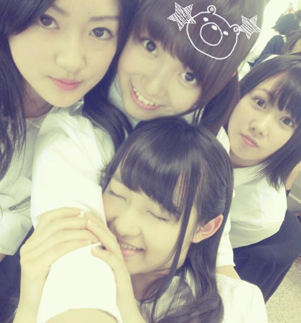
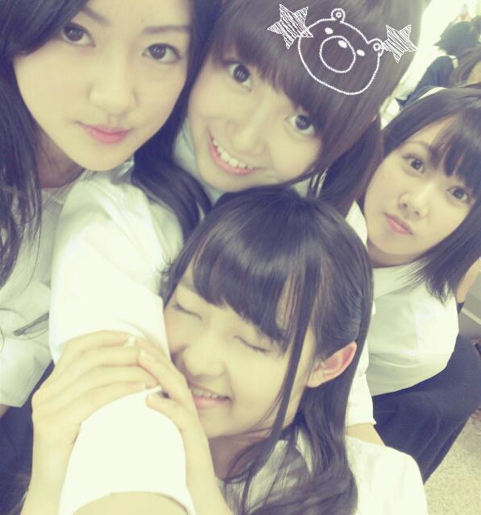

| 2012/12 09 Sun | ひめたん(*>ω<*)そ の239 |
ゆったんの漢字間違えた(´;ω;`)
ゆったん、ふぁみたんのみなさん
ごめんなさいぃいー(´;ω;`)
ご指摘ありがとうですー
ふぁみたんて響き可愛いねー♪
ふぁみたんさんふぁみたんさん。
そーいや
4thの個人PVのダイジェスト版
公開されてましたーねー
いやーゆっとくけど
もうあたしは完璧に克服したんでね
メンバーおーってなってくれたしね＊
∪・ω・∪
今回の個人PV制作に
関わった全スタッフさんに感謝！
たった数時間で
ひめたんが16年半苦手だったことを
のっと苦手にしてくれたからねー
そーいや
乃木坂ん中ではとうに流行ってたけど
ひめたんにも豆乳ブームきてあ＼(^^)／
なんかね豆乳って
植物性だから体にいいんだよーって
メイクさんがゆってたよー
あたしが豆乳ですどうもって味だと
なんか気が引けるから
バナナ風味とかカフェオレ風味とか
飲んでるよー(｀・ω・´)うましうまし
らりんかわゆすー*\(^^)/*

ゆったん、ふぁみたんのみなさん
ごめんなさいぃいー(´;ω;`)
ご指摘ありがとうですー
ふぁみたんて響き可愛いねー♪
ふぁみたんさんふぁみたんさん。
そーいや
4thの個人PVのダイジェスト版
公開されてましたーねー
いやーゆっとくけど
もうあたしは完璧に克服したんでね
メンバーおーってなってくれたしね＊
∪・ω・∪
今回の個人PV制作に
関わった全スタッフさんに感謝！
たった数時間で
ひめたんが16年半苦手だったことを
のっと苦手にしてくれたからねー
そーいや
乃木坂ん中ではとうに流行ってたけど
ひめたんにも豆乳ブームきてあ＼(^^)／
なんかね豆乳って
植物性だから体にいいんだよーって
メイクさんがゆってたよー
あたしが豆乳ですどうもって味だと
なんか気が引けるから
バナナ風味とかカフェオレ風味とか
飲んでるよー(｀・ω・´)うましうまし
らりんかわゆすー*\(^^)/*


 ひめたんって響きが姫！って感じするんだけど、実際どうなの？笑
ひめたんって響きが姫！って感じするんだけど、実際どうなの？笑
どうなの？どうなんでしょうか。
でもそれたまに言われるね。
嬉しいね(//_//)ねっ
妹はきっとそーゆの狙ってひめたんって名前つけてないと思うけどねー
じゃそゆことにしましょうよ。ねっ
毎回コメントしてたら覚えてくれる？
久しぶりにコメントしても
ひめたん覚えてくれてる？
忘れられてたら悲しいな(´・_・`)
覚えてるよっ
悲しいとか言わんの！
予防接種の時、ひめたん泣かなかった？ひめたんとあしゅは絶対泣いてそう...。(笑)
ひめたんもあしゅも泣いてないよ( ^^ )
きっと誰も泣いてなかったよー
みんな強い子だからさー
ちなみに、ひめたんちっちゃい頃にどうしても注射怖かったのね
んーで、ままが「パレプレ」って10回唱えてるあいだに注射終わってるから大丈夫だよーって教えてくれたから
注射のたんびにそれ唱えてるー
個人PVの監督さんは、誰が決めてるんですか？
（メンバーが指名してるのか？監督側がメンバーを指名してるのか？乃木坂運営が決めているのか？って事です。）
あたしの立場じゃよーわからんけど、
ひとつ言えるのは、メンバーから監督さん指名することはないですねー(ω)
ひめたんの苦手克服入ってるDVDはType ？ですか。
それままにも聞かれるんだけどね
ひめたんにもよーわからんので
発表されるの待っててくださいー(´;ω;`)
今までの衣装・制服で特にお気に入りのものはありますか？
いっちばん最初に着た
ピンクスカート×ピンクセーターと、
制服のマネキンの白いセーラーかなー♪
乃木坂☆ハコ推し！！ あり？なし？
わーいわーい＼(^^)／
乃木坂のことすきなの嬉しいよー
ありだと思うけどね
推しめん決めるのも楽しいかもよ？
に、にっこり
今月１０日が誕生日なのでお祝いしてもらえますか？
お誕生日おめでとうー＼(^^)／
フライングしたね。そゆこともあるさ。
素敵な１年になりますように＊
12月24日の京都全握にクリスマスコスして行こうと思ってるんやけど、何コスがいいかなぁ？
サンタ？ トナカイ？ スノーマン？ クリスマスツリー？ 東京スカイツリー？？
ツリー？ツリーなんかあるの？笑
いやーなんでもかわいいけどーそのー
どうせならおもいっきし目立つやつにしなよ∩^ω^∩ねっ
もし一つ願いが叶うとしたら何をお願いする？！
ひめたん は今年のクリスマス
サンタさんに何をお願いする？
バケツぷりん食べたい(*>ω<*)!!!
とりあバケツでも...頼もかな...てへ。
(＊´・ω・＊)ひめたん
コメント(84)
2012/12/09 09:42